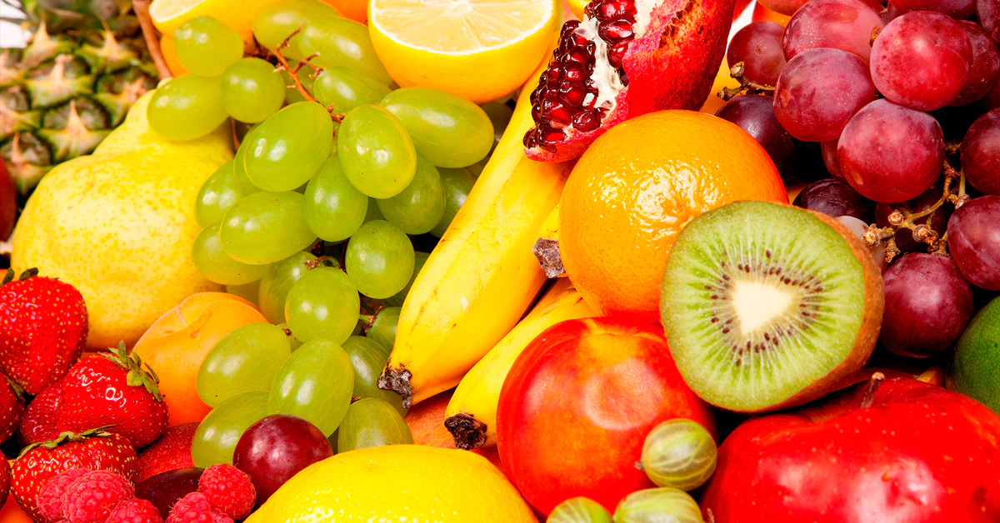

As Melhores Frutas,Os Melhores Sabores
Boas Frutas tem sabor de alegria!

Evite o consumo de alimentos ultra processados
Coma regularmente, com atenção e em companhia

As Frutas mais exóticas do mundo
Prefira alimentos in natura ou minimamente processados